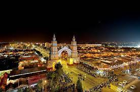

Es una liga de 12 participantes en los que se enfrentan entre sí en 11 jornadas. Su sistema se basa en un ranking donde cada rapero suma puntos (o no) en una jornada según el resultado de su batalla: Victoria: 3 puntos. Victoria tras réplica: 2 puntos.
La Feria de Abril es una de las fiestas más internacionales y populares de Sevilla. Creada en 1847 como feria ganadera, con el tiempo el aspecto festivo del acontecimiento terminó imponiéndose a la parte comercial, hasta convertirse en una cita imprescindible para los sevillanos.
